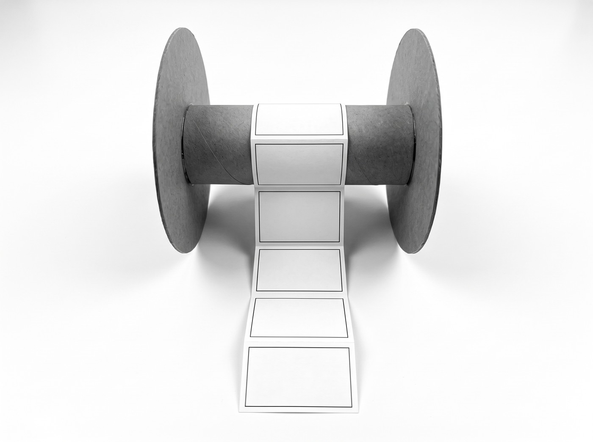
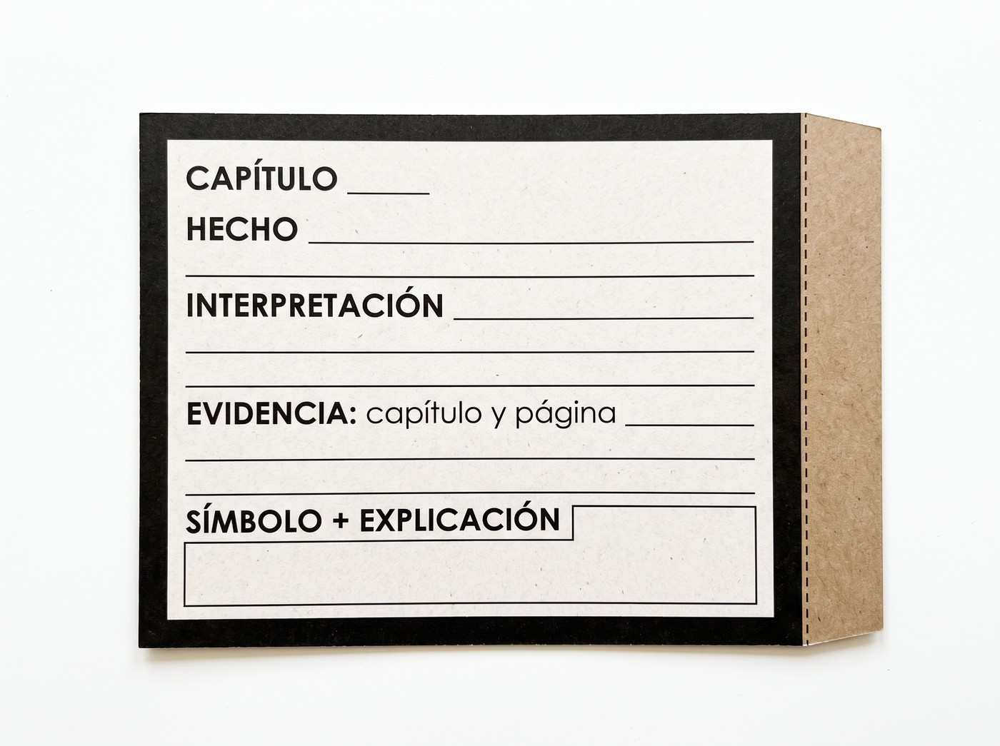
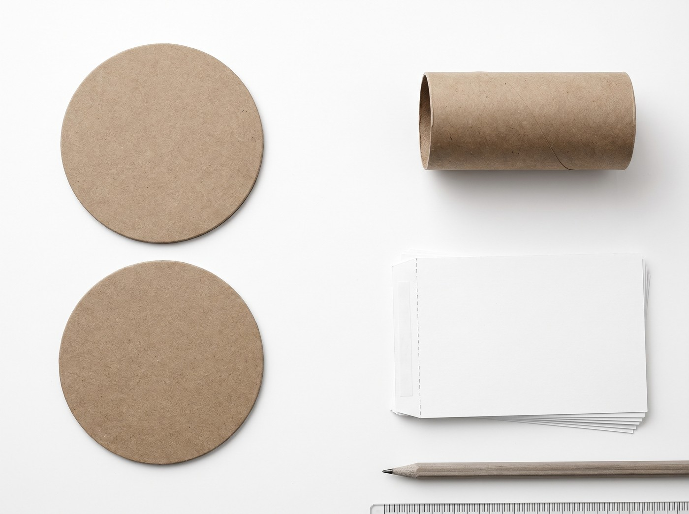
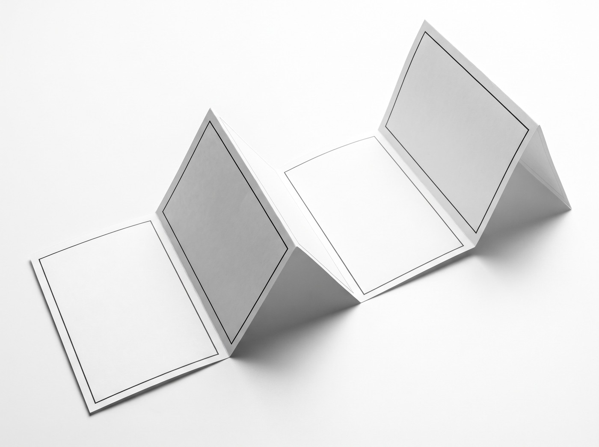
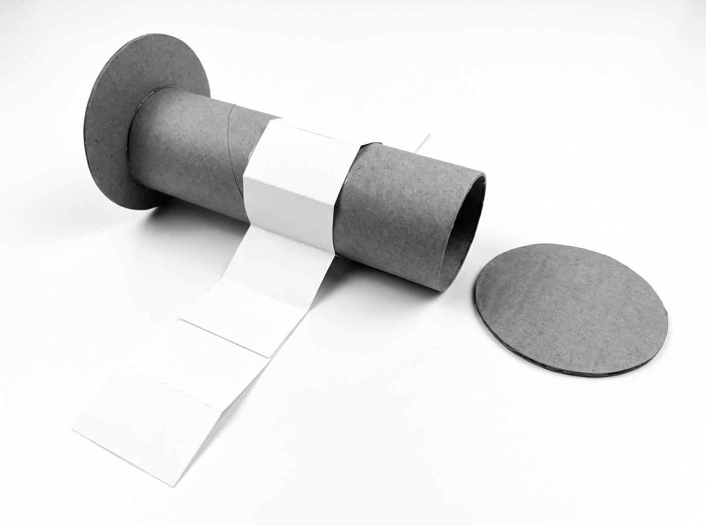

Plan lector · Hermann Hesse
Siddhartha
Carrete literario
Transforma tu lectura en una tira de 16 fotogramas. Cada estudiante lee el libro completo y realiza todas las partes.
90 puntos: contenido literario.
10 puntos: legibilidad y funcionamiento.

Qué vamos a interpretar
Interpretar la transformación de Siddhartha y sus relaciones mediante un carrete que recorra los doce capítulos, desarrollando la fundamentación con evidencia textual.
Primero redacta y revisa tus ideas. Después construye el carrete. Los adornos, el costo de los materiales y la precisión del corte no suman puntos.
Mira cómo se hace
Tutorial del carrete
Material para trabajar en papel
Las 16 partes que hace cada estudiante
El libro tiene dos partes y doce capítulos: cuatro capítulos en la primera y ocho en la segunda. El carrete organiza la evaluación en 16 tarjetas.
- 01 · Portada. Título, autor, nombre, curso y edición.
- 02–13 · Los doce capítulos. Una tarjeta por capítulo, en el orden del libro.
- 14 · Síntesis y símbolos. Relaciona inicio, crisis y cierre; interpreta dos símbolos con escenas de apoyo.
- 15 · Reflexión crítica. ¿Se puede aprender a vivir solo mediante enseñanzas ajenas? Fundamenta tu postura con dos episodios de distintas etapas.
- 16 · Edición y fuentes. Autor, título, editorial, año y traductor/a; otras fuentes y fecha de consulta.
En cada capítulo
- Hecho: ¿qué ocurre y quién participa?
- Interpretación: ¿qué significa o qué cambia?
- Evidencia: cita breve o paráfrasis precisa, con capítulo y página de tu edición.
- Símbolo o esquema: una idea representada y su explicación.
Si tu edición no tiene páginas, indica capítulo y primeras palabras del párrafo. Orientación: 50–80 palabras por capítulo; prioriza claridad.

Preguntas para recorrer la novela
| F | Capítulo | Pregunta orientadora |
|---|
Cómo construirlo: piezas, pliegues y montaje
Usa cartón reutilizado, papel, lápiz, regla, tijeras y pegamento o cinta. Las medidas son una opción práctica; puedes ampliar las tarjetas.



Imágenes ilustrativas generadas con IA. Para cortar, usa las plantillas y sus medidas. La decoración es opcional.
Antes de entregar: revisa tu contenido
- Están los doce capítulos, en orden.
- Cada interpretación se apoya en un pasaje localizado.
- La síntesis explica la trayectoria y dos símbolos.
- La reflexión sostiene tu postura con dos episodios.
- Identificas tu edición y las fuentes consultadas.
- El carrete se lee al desplegarlo y puedes explicar cualquiera de sus fotogramas.
Se permiten tarjetas mayores, texto digitado, dictado con apoyo y ayuda para cortar o pegar. El análisis corresponde al estudiante.
Las fechas de trabajo y entrega serán indicadas por el docente.